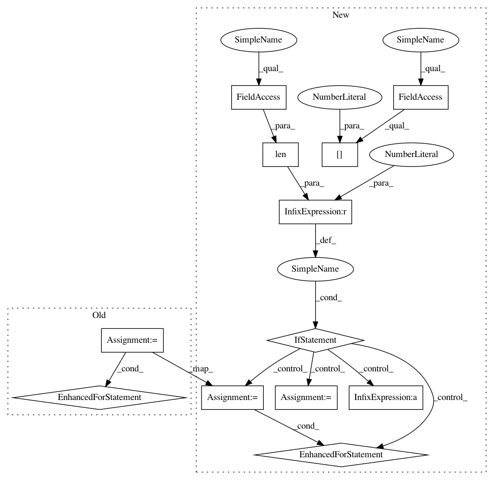

482bd1472c7c3bbd3f08cf964c841d922a3e1421,GPy/kern/_src/prod.py,Prod,gradients_X_diag,#Prod#Any#Any#,61
Before Change
def gradients_X_diag(self, dL_dKdiag, X):
target = np.zeros(X.shape)
k = self.Kdiag(X)*dL_dKdiag
for p in self.parts:
target += p.gradients_X_diag(k/p.Kdiag(X),X)
return target
After Change
def gradients_X_diag(self, dL_dKdiag, X):
target = np.zeros(X.shape)
if len(self.parts)==2:
target += self.parts[0].gradients_X_diag(dL_dKdiag*self.parts[1].Kdiag(X), X)
target += self.parts[1].gradients_X_diag(dL_dKdiag*self.parts[0].Kdiag(X), X)
else:
k = self.Kdiag(X)*dL_dKdiag
for p in self.parts:
target += p.gradients_X_diag(k/p.Kdiag(X),X)
return target
In pattern: SUPERPATTERN
Frequency: 3
Non-data size: 12
Instances
Project Name: SheffieldML/GPy
Commit Name: 482bd1472c7c3bbd3f08cf964c841d922a3e1421
Time: 2015-02-11
Author: james.hensman@gmail.com
File Name: GPy/kern/_src/prod.py
Class Name: Prod
Method Name: gradients_X_diag
Project Name: SheffieldML/GPy
Commit Name: 482bd1472c7c3bbd3f08cf964c841d922a3e1421
Time: 2015-02-11
Author: james.hensman@gmail.com
File Name: GPy/kern/_src/prod.py
Class Name: Prod
Method Name: gradients_X_diag
Project Name: SheffieldML/GPy
Commit Name: 482bd1472c7c3bbd3f08cf964c841d922a3e1421
Time: 2015-02-11
Author: james.hensman@gmail.com
File Name: GPy/kern/_src/prod.py
Class Name: Prod
Method Name: gradients_X
Project Name: rasbt/mlxtend
Commit Name: aefd8bcf146d6de8f19fc0c3c5873880bc82886f
Time: 2015-02-23
Author: se.raschka@me.com
File Name: mlxtend/sklearn/ensemble.py
Class Name: EnsembleClassifier
Method Name: fit